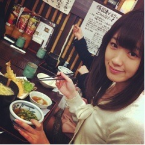

2012/0226Sun（´-`）.。oO(かずみん×36
こんばんはU^ェ^U
いつも沢山のコメント
ありがとうございます！
皆さんからの暖かい言葉に
いつも元気をもらってます(*^_^*)
ありがとうございます！
---------------------
4日間に渡るミニ握手会、
今日で最終日でした！
写真は香川にて

U〜don♪
私はこのミニ握手会で
福岡、熊本、広島、香川へ
行かせていただききましたよ(*^^*)
九州、四国に行ったのも
初めてでした！
楽しかった～\(//∇//)\
お越しくださった皆さんは
とても朗らかで、笑顔が素敵で、
癒されました(*^_^*)
絶対また行きたいです！
本当にありがとうございました！
一緒に握手会をした
かな、まあや、みさみさ、
せいたん、陽菜ちゃん
お疲れ様（＾＿＾）☆
楽しかったです！
ありがとうね＊.°
今回お会いできなかった皆さん、
次にお会いできる日を
楽しみにしてます(^^)
--------------------
まあやブログでまあやが私の事を
書いてくれてました(*^o^*)
ありがとまあや( ´ ▽ ` )ﾉ
まあやは本当に
愛されキャラです(#^.^#)
一緒にいると笑がたえないよ～
そんなまあやが大好きですo(^▽^)o
------------------------
今日は乃木どこですね！
公開収録の時の回が放送されます(*^^*)
ぜひ見てください！
それでは、まだまだ寒いですが、
お身体に気をつけて
学校、お仕事頑張りましょう♭.°
高山一実
2012/02/26 19:42
コメント(250)
かずみん握手会お疲れ様＼(^o^)／
ゆっくり休んでね！
美味しいものいっぱい
食べれたみたいだね(^^)♪
うちはまだかずみんに会えてんから
早く会いたいよー(＾ｰ^)ノ
絶対会いに行くからー(^_−)−☆
ゆっくり休んでね！
美味しいものいっぱい
食べれたみたいだね(^^)♪
うちはまだかずみんに会えてんから
早く会いたいよー(＾ｰ^)ノ
絶対会いに行くからー(^_−)−☆
かずみんこんばんは。
4日間イベントお疲れさまでした。
次の土曜日イベント行きます。初めて会えるので今から凄くワクワクしてます。
めっちゃ楽しみだー
ー(☆。☆)ー
4日間イベントお疲れさまでした。
次の土曜日イベント行きます。初めて会えるので今から凄くワクワクしてます。
めっちゃ楽しみだー
ー(☆。☆)ー
かずみんこんばんわーー


今日は 全国ミニ握手会最終日お疲れ様
全国ミニ握手会最終日お疲れ様

まだ行ったことのない地域 もあると思うので
もあると思うので
出来たら全国を回りたいですねーー

UーーDON 美味しそうーーー

お土産 お待ちしております
お待ちしております
では明日も 日頑張りましょう
日頑張りましょう
たーちゃんより
今日は
まだ行ったことのない地域
出来たら全国
UーーDON 美味しそうーーー
お土産
では明日も
たーちゃんより
握手おつかれさまー(*^^*)♪
楽しかったみたいで良かったね!!
次は岐阜にも来てよー寂しいよー(;o;)
まあやの記事ばっちりチェック済★
かずみんも愛されキャラ～(^^)/
これからも暖かいコメント←
し続けようじゃないかっ♪
楽しかったみたいで良かったね!!
次は岐阜にも来てよー寂しいよー(;o;)
まあやの記事ばっちりチェック済★
かずみんも愛されキャラ～(^^)/
これからも暖かいコメント←
し続けようじゃないかっ♪
お疲れ様
全国で握手は大変だったね
俺は成田だけ行ったから
かずみんと握手できるのは
全握か個別のどっちかです！
全国で握手は大変だったね
俺は成田だけ行ったから
かずみんと握手できるのは
全握か個別のどっちかです！
今日はありがとう
すっごくかわいかった
また香川に来てね
すっごくかわいかった
また香川に来てね
おぉ～、公開収録の！ 楽しみデス。
ミニ握手会イベントは、無事に終わりましたか？
楽しく出来たようですね、良かったァ～！
残念ながら今回は、会いに行けませんでした。
チャンスがくるのを待ちます。
身体をこわさないようにして、坂をのぼってね〜‼
ミニ握手会イベントは、無事に終わりましたか？
楽しく出来たようですね、良かったァ～！
残念ながら今回は、会いに行けませんでした。
チャンスがくるのを待ちます。
身体をこわさないようにして、坂をのぼってね〜‼
お疲れ様さまかすみん！ ^_^
頑張ってね！
応援します！
From シンガポール
Rui（るい）
頑張ってね！
応援します！
From シンガポール
Rui（るい）
こんばんは♪
いつもブログ更新楽しみにしてます(^^)/
公開収録行けなかったから乃木どこめっちゃ楽しみですわ
かずみんに会えるのは東京の個別だ(T-T)
先が長いww
おやすみなさい(-.-)Zzz・・・・
いつもブログ更新楽しみにしてます(^^)/
公開収録行けなかったから乃木どこめっちゃ楽しみですわ
かずみんに会えるのは東京の個別だ(T-T)
先が長いww
おやすみなさい(-.-)Zzz・・・・
4日間握手会お疲れ様でしたぁ～
遠過ぎて1回も行けなかったけど
気持ちだけそっちに飛ばしてましたｗ
今度は千葉でやろうｗ
次は3月3日の全国握手会だねぇ～
気付けば1週間切ってる
早い
まだかずみんとは1回しか握手してないんで
今からめっちゃ楽しみだぁ～
乃木どこも観るよ～
Mラバと時間かぶってるけどｗ
遠過ぎて1回も行けなかったけど
気持ちだけそっちに飛ばしてましたｗ
今度は千葉でやろうｗ
次は3月3日の全国握手会だねぇ～
気付けば1週間切ってる
早い
まだかずみんとは1回しか握手してないんで
今からめっちゃ楽しみだぁ～
乃木どこも観るよ～
Mラバと時間かぶってるけどｗ
一実さん握手会お疲れさまー!!
あっ！やっぱりうどん食べてるー！いくちゃんも食べたかっただろうね(笑)
昨日は、広島焼きだったよね!!羨ましいー！
公開収録行ってないから楽しみ！
メンバーたくさん出るし♪
明日も頑張ってこーうヽ(・∀・)ノ
あっ！やっぱりうどん食べてるー！いくちゃんも食べたかっただろうね(笑)
昨日は、広島焼きだったよね!!羨ましいー！
公開収録行ってないから楽しみ！
メンバーたくさん出るし♪
明日も頑張ってこーうヽ(・∀・)ノ
ミニ握手会お疲れ様でした(^^)
今回は行けなかったけど、全国握手会と個別握手会は行くからね?♪
やっぱ香川と言ったらうどんだよね(*´艸`)写真可愛いよ☆
かずみんも体調に気をつけて頑張ってね?ヽ(´∀｀*)ノ
今回は行けなかったけど、全国握手会と個別握手会は行くからね?♪
やっぱ香川と言ったらうどんだよね(*´艸`)写真可愛いよ☆
かずみんも体調に気をつけて頑張ってね?ヽ(´∀｀*)ノ
かずみん頑張って！
おうえんしてるよ～＾＾
テレビ見てますよ！キャラが出てて面白いです！♪
今日かずみん見た(^^)/
イベントお疲れさまでしたm(_ _)m
今日はMusic Loversも同じ時間にあるので、SONYのレコーダーでW録します(b^-°)
今日はMusic Loversも同じ時間にあるので、SONYのレコーダーでW録します(b^-°)
鹿児島なうです(^o^)v
なんでのぎどこ見れません(>_<)
マヂなんでなんよー…(笑)
前回コメ忘れてた
ごめんなさい;-)
3/24の名古屋が楽しみや(⌒‐⌒)
それじゃあおやすみ～
たんたかたん＼(^_^)／
なんでのぎどこ見れません(>_<)
マヂなんでなんよー…(笑)
前回コメ忘れてた
ごめんなさい;-)
3/24の名古屋が楽しみや(⌒‐⌒)
それじゃあおやすみ～
たんたかたん＼(^_^)／
こんばんは(^^)/
4日間お疲れ様ー！
九州・本州・四国ってたくさんのところに行けていいね！
いろんな人とお話できただろうしいきっといい経験ができたんだろうな(*^^*)
うどんおいしそ～!!
やっぱ本番さぬきのは美味しい？
乃木どこの公開収録は行けなかったから今日の放送楽しみにしてるね！
ではでは
今日も1日お疲れ様！
明日も頑張ろ～(*´∀`)♪
4日間お疲れ様ー！
九州・本州・四国ってたくさんのところに行けていいね！
いろんな人とお話できただろうしいきっといい経験ができたんだろうな(*^^*)
うどんおいしそ～!!
やっぱ本番さぬきのは美味しい？
乃木どこの公開収録は行けなかったから今日の放送楽しみにしてるね！
ではでは
今日も1日お疲れ様！
明日も頑張ろ～(*´∀`)♪
そーですね～香川ってーと確かにうどんだがや～( ^^)Y☆Y(^^ )(゜▽゜)本広監督で
ユースケ・サンタマリアが主演で香川ロケの映画ってあったんですよ～！(＾＾)！＼(^^:;)
未だに四国は行ったことがないのですが（笑）画の高山ちゃんも可愛いですし～～o(^-^o)(o^-^)o
にしてもかなちゃんのblogにもひょっこり逆さまで（笑）登場でしたわに～(＃^.^＃)(゜▽゜)
まあ、元気なようで何よりですきに～～。にしても広大に移動したんですな～！(＾＾)！(^^ゞ
おちかれ様でやんした
ユースケ・サンタマリアが主演で香川ロケの映画ってあったんですよ～！(＾＾)！＼(^^:;)
未だに四国は行ったことがないのですが（笑）画の高山ちゃんも可愛いですし～～o(^-^o)(o^-^)o
にしてもかなちゃんのblogにもひょっこり逆さまで（笑）登場でしたわに～(＃^.^＃)(゜▽゜)
まあ、元気なようで何よりですきに～～。にしても広大に移動したんですな～！(＾＾)！(^^ゞ
おちかれ様でやんした
かずみん、こんばんは
ミニ握手会、お疲れ様でした
九州、四国、千葉に住んでるとなかなか行かないからねぇ．．．修学旅行もそっちには行かないし
これからは全国各地、いろんなところに行けるね
今日の写真はお姉さんの顔してますね。
年下が多いと自然とお姉さんになるのかな？
かずみん、ありがとね
ミニ握手会、お疲れ様でした
九州、四国、千葉に住んでるとなかなか行かないからねぇ．．．修学旅行もそっちには行かないし
これからは全国各地、いろんなところに行けるね
今日の写真はお姉さんの顔してますね。
年下が多いと自然とお姉さんになるのかな？
かずみん、ありがとね
なかなか日程が会いませんが、初握手できる日を楽しみにしてます＠Tokyo お見立て会から活躍注目してます ！
！
かずみんお疲れ様(^O^)
かずみんのブログ待ってました!
俺もはやく握手したいです自分新潟県民なんで新潟にも遊びに来て?(^○^)
かずみんのブログ待ってました!
俺もはやく握手したいです自分新潟県民なんで新潟にも遊びに来て?(^○^)
お疲れ(^^)
ミニ握手会行けなかった(>_
ミニ握手会行けなかった(>_
俺はかずみんの笑顔に元気もらっとるよ～!!
でもね…
今日はバイトで疲れたあ
バイトで疲れた大学1年生に癒しの一言をくださいっ!!!
お願い(。・ω・。)
あっきー
でもね…
今日はバイトで疲れたあ
バイトで疲れた大学1年生に癒しの一言をくださいっ!!!
お願い(。・ω・。)
あっきー
握手会お疲れさまでした
握手できてとてもうれしかったです
うどんはおいしかったですか？
また香川に来てください
今日はありがとうございました
乃木坂４６最高
握手できてとてもうれしかったです
うどんはおいしかったですか？
また香川に来てください
今日はありがとうございました
乃木坂４６最高
また広島に来てください！(^.^)
『全国制覇まであと何県？』
こんばんは、かずみん(^-^)/
お疲れ様でした。
全国飛び回りましたねー、頑張った！！
かずみん箸の持ち方綺麗なんだけど、
素晴らしい
凛としてみえる、
よっ、ジャパニーズガール(^-^)
かずみんも愛されキャラであるからね
だーい好きです
バイバーイ
＼(^o^)／
こんばんは、かずみん(^-^)/
お疲れ様でした。
全国飛び回りましたねー、頑張った！！
かずみん箸の持ち方綺麗なんだけど、
素晴らしい
凛としてみえる、
よっ、ジャパニーズガール(^-^)
かずみんも愛されキャラであるからね
だーい好きです
バイバーイ
＼(^o^)／
ミニ握手会お疲れさま☆
色々な人と握手できたし、
その地域の名物も食べれて
楽しい4日間だったみたいだね (^-^)v
てか、
キクラゲが
かずみんの笑顔に癒された！
楽しく過ごせたわ～ (*^^*)♪
疲れてるだろうから
ゆっくり休んでね☆
色々な人と握手できたし、
その地域の名物も食べれて
楽しい4日間だったみたいだね (^-^)v
てか、
キクラゲが
かずみんの笑顔に癒された！
楽しく過ごせたわ～ (*^^*)♪
疲れてるだろうから
ゆっくり休んでね☆
かずみんこんばんは
ミニ握手会お疲れさまでした！
もう東京に帰ってきたのかな？ゆっくり休んでください
東京の全国握手会でお会いしましょうそしてお話ししましょう
今日は乃木どことMLですね両方録画します
ミニ握手会お疲れさまでした！
もう東京に帰ってきたのかな？ゆっくり休んでください
東京の全国握手会でお会いしましょうそしてお話ししましょう
今日は乃木どことMLですね両方録画します
ミニ握手お疲れ様！
達成感半端なそうだねw
自分も握手参加できてほんとよかった(*^^*)
まあやちゃんはいいこすぎるわー(^^)
また３月３日に会えるの楽しみにしてるね＼(^_^)／
P.S ちゃんとてへぺろ練習してる？w
個別のとき楽しみにしてる(笑)
ゆっくり休んでね(*^^*)
コウヘイより(*≧∀≦*)
達成感半端なそうだねw
自分も握手参加できてほんとよかった(*^^*)
まあやちゃんはいいこすぎるわー(^^)
また３月３日に会えるの楽しみにしてるね＼(^_^)／
P.S ちゃんとてへぺろ練習してる？w
個別のとき楽しみにしてる(笑)
ゆっくり休んでね(*^^*)
コウヘイより(*≧∀≦*)
館山に来てね(^-^)/
これからもがんばれ(^-^)b
広島で握手できて良かったよ(o・・o)/~
かずみんの笑顔に癒されましたぜ(｀・ω´・)
かずみんの笑顔に癒されましたぜ(｀・ω´・)
今日は乃木どこにMusicLovers！乃木坂づくしだ！
早くかずみんと会いたいな～実際まだ1回しか握手したことないからなぁ・・・
全国握手会と名古屋個別と東京個別で待っててね！
早くかずみんと会いたいな～実際まだ1回しか握手したことないからなぁ・・・
全国握手会と名古屋個別と東京個別で待っててね！
こんばんわ～シカオです(^^)
ミニ握手会どうもお疲れさま～♪♪
ファンの人とたくさんふれあえてよかったね(゜▽゜)Y
福岡、熊本、広島、香川かぁ～イイなぁ～( ´ ▽ ` )
九州も四国も行ったことないからうらやましい!!!
美味しいものいっぱい食べた～？
あ、まあやブログ読んだよ～(^o^)
まあやは本当にメンバーをよく見てるなぁって思った(゜▽゜)
ってか、観察してるなぁって思ったww
公開収録に行けなかったので、今夜の乃木どこめっちゃ楽しみにしてまーす＼(^o^)／
P.S 俺さぁ一昨日体調崩しちゃったんだよね…(-_-;;;)
今はだいぶ良くなったけど＞＜
かずみんも身体に気をつけて頑張ってね☆
ミニ握手会どうもお疲れさま～♪♪
ファンの人とたくさんふれあえてよかったね(゜▽゜)Y
福岡、熊本、広島、香川かぁ～イイなぁ～( ´ ▽ ` )
九州も四国も行ったことないからうらやましい!!!
美味しいものいっぱい食べた～？
あ、まあやブログ読んだよ～(^o^)
まあやは本当にメンバーをよく見てるなぁって思った(゜▽゜)
ってか、観察してるなぁって思ったww
公開収録に行けなかったので、今夜の乃木どこめっちゃ楽しみにしてまーす＼(^o^)／
P.S 俺さぁ一昨日体調崩しちゃったんだよね…(-_-;;;)
今はだいぶ良くなったけど＞＜
かずみんも身体に気をつけて頑張ってね☆
昨日は広島まで来てくれてほんっとに
ありがとうございました(*^o^*)♪
すごく楽しかったし何よりかずみんに
お人形さんみた〜い！って言われた
のが嬉しすぎました(T_T)！！！！！
お世辞って分かっててもほんとに
嬉しかったです(/ _ ; )(笑)
また広島遊びに来てくださいね！！
_
自分も香川旅行行ったときうどん食った！！
まぢ旨し
そんな俺は、昨日うどんではないが、きしめんを名古屋でたべた
握手会が楽しみです！！
３日と３１日行きます
風邪引かないよう仕事頑張ってください！！
受験終わって暇すぎるｗｗ
まぢ旨し
そんな俺は、昨日うどんではないが、きしめんを名古屋でたべた
握手会が楽しみです！！
３日と３１日行きます
風邪引かないよう仕事頑張ってください！！
受験終わって暇すぎるｗｗ
握手会お疲れさんです＼(^^)／
今日の乃木どこ楽しみです＼(^^)／
4日間お疲れさま～！！☆☆☆
福岡の握手会行きましたよ～！！☆☆☆
やっぱり生で見ると何倍も可愛かったです～！！☆☆☆
ずっとかずみん推しだからね～！！☆☆☆
山口百恵さんのような素晴らしいアイドルになるようにずっと応援してるから～！！☆☆☆
また福岡にも来て下さいね～！！☆☆☆
その時は必ず行くからね～！！☆☆☆
福岡の握手会行きましたよ～！！☆☆☆
やっぱり生で見ると何倍も可愛かったです～！！☆☆☆
ずっとかずみん推しだからね～！！☆☆☆
山口百恵さんのような素晴らしいアイドルになるようにずっと応援してるから～！！☆☆☆
また福岡にも来て下さいね～！！☆☆☆
その時は必ず行くからね～！！☆☆☆
今日の握手会とっても良かったです。
初めて握手会だったのであまり話せませんでしたが・・・・・・(泣)
とっても可愛いかったです(*´д｀*)
うどんは食べましたか？美味しいかったですかねぇ。
また、香川県に来てください。
初めて握手会だったのであまり話せませんでしたが・・・・・・(泣)
とっても可愛いかったです(*´д｀*)
うどんは食べましたか？美味しいかったですかねぇ。
また、香川県に来てください。
（´-`）.。oO(はやはや×８
かずみん久しぶり!
今はテスト期間で日々勉強です。。。
３月３日握手会だぁ!!
ウインク下さいって言ってもいい?笑
どれくらい握手出来るのかな??出来るだけ長く話したいな?*
かずみん大好き!!
目指せ紅白!!
》》野球部のはやはや《《
かずみん久しぶり!
今はテスト期間で日々勉強です。。。
３月３日握手会だぁ!!
ウインク下さいって言ってもいい?笑
どれくらい握手出来るのかな??出来るだけ長く話したいな?*
かずみん大好き!!
目指せ紅白!!
》》野球部のはやはや《《
コメントしても反映されていないことがあるのがショック(>__<)
東海地方にもきて欲しかった!!
なので今度の名古屋の握手会では絶対行きますね♪
あとでまあやのブログも確認しておきます！
今日のは公開収録のときのってことは…
もしかしたらいつもと少しだけ違ったかずみんが映ってるかも…
と淡い期待をしてテレビの前で待つことにします(*^^*)
ではかずみんも良き朝が迎えられますように。
これからも互いに頑張りましょうね♪
東海地方にもきて欲しかった!!
なので今度の名古屋の握手会では絶対行きますね♪
あとでまあやのブログも確認しておきます！
今日のは公開収録のときのってことは…
もしかしたらいつもと少しだけ違ったかずみんが映ってるかも…
と淡い期待をしてテレビの前で待つことにします(*^^*)
ではかずみんも良き朝が迎えられますように。
これからも互いに頑張りましょうね♪
ミニ握手会お疲れ様o(^o^)o
CD買ったよ♪二枚買ったよ(^з^)-☆握手会券とメンバーの生写真付きでテンション↑↑↑握手会行きたいなぁ(^o^)v一実ちゃん会いたーい♪６年ぶりの再会!?←もし会えたらd=(^o^)=b
仕事＆学校、←卒業まであと少し!!大変だと思うけど頑張ってね♪応援しています！
CD買ったよ♪二枚買ったよ(^з^)-☆握手会券とメンバーの生写真付きでテンション↑↑↑握手会行きたいなぁ(^o^)v一実ちゃん会いたーい♪６年ぶりの再会!?←もし会えたらd=(^o^)=b
仕事＆学校、←卒業まであと少し!!大変だと思うけど頑張ってね♪応援しています！
初コメします。
頑張って下さい。
ずっと応援していきます。
今回はこれが言いたかったです。
頑張って下さい。
ずっと応援していきます。
今回はこれが言いたかったです。
今日は本当に楽しかったです！！
１回目の握手では緊張して何もしゃべれなかった・・・暖かく笑ってくれてありがとうございました！
また絶対に行きますね！！
１回目の握手では緊張して何もしゃべれなかった・・・暖かく笑ってくれてありがとうございました！
また絶対に行きますね！！
かずみん握手会最終日お疲れ様！
祇園以来に会えて思ったのは、やっぱりかずみんかわいいよ！3回いったけどまだ足りない…。
3月は握手会いっぱいだね!!
かずみんに会いに行けるように頑張るけど、仕事で行けなかったらゴメンネ。
大阪の個別は必ず行くけど、まだ2ヶ月もある…。
でも今日はガールズファクトリーとミュージックラバーズと乃木ドコあるから楽しみ！
かずみんの笑顔見て寝ます！
おやすみー！
祇園以来に会えて思ったのは、やっぱりかずみんかわいいよ！3回いったけどまだ足りない…。
3月は握手会いっぱいだね!!
かずみんに会いに行けるように頑張るけど、仕事で行けなかったらゴメンネ。
大阪の個別は必ず行くけど、まだ2ヶ月もある…。
でも今日はガールズファクトリーとミュージックラバーズと乃木ドコあるから楽しみ！
かずみんの笑顔見て寝ます！
おやすみー！
かずみん握手会お疲れ様です。
今回は行けなかったけど
今度は絶対行きます！
かーずみーん
大好きだー(^-^)/
今回は行けなかったけど
今度は絶対行きます！
かーずみーん
大好きだー(^-^)/
ミニ握手会お疲れ様＼((=ﾟ▽ﾟ)／
天ぷらうどんかな !?
!?
とっても美味しそう(^^) かずみんが写ってるとさらに100倍美味しそう（笑）
ミニ握手会はいけなかったけど、3日の全国握手会は行けることになったから楽しみにしてるねっ♪♪
公開収録以来や!! 握手はクリスマス以来かな....
とにかくすごく楽しみ\(//∇//)\
かずみん不足なう←
毎日色んなとこ行って大変だと思うけど、無理せず身体には気をつけて頑張ってね^^
まあやブログみたよ≡(/*@д@)/
2人ラブラブジャマイカ！.......間違えた、じゃないか！！
んもぅww 嫉妬しちゃう(＞人＜;)←何キャラwww
手紙書いたから出すねー^^
こまめにちょくちょく出そうと思うよ!!
それではっ(^-^)/
☆⊿☆⊿☆(なお・ω・やん)☆⊿☆⊿☆
そろそろ第2回質問コーナーやってほしいな♪
まぁ時間があればでいいけど.....(^o^)
天ぷらうどんかな
とっても美味しそう(^^) かずみんが写ってるとさらに100倍美味しそう（笑）
ミニ握手会はいけなかったけど、3日の全国握手会は行けることになったから楽しみにしてるねっ♪♪
公開収録以来や!! 握手はクリスマス以来かな....
とにかくすごく楽しみ\(//∇//)\
かずみん不足なう←
毎日色んなとこ行って大変だと思うけど、無理せず身体には気をつけて頑張ってね^^
まあやブログみたよ≡(/*@д@)/
2人ラブラブジャマイカ！.......間違えた、じゃないか！！
んもぅww 嫉妬しちゃう(＞人＜;)←何キャラwww
手紙書いたから出すねー^^
こまめにちょくちょく出そうと思うよ!!
それではっ(^-^)/
☆⊿☆⊿☆(なお・ω・やん)☆⊿☆⊿☆
そろそろ第2回質問コーナーやってほしいな♪
まぁ時間があればでいいけど.....(^o^)
やっほー(^O^)/
握手会お疲れさま♪
広島の握手会めっちゃ楽しかったわ(^^)
かずみんにもやっと会えたし最高やった
ありがとー♪
次会えるんは
名古屋の個別かな
楽しみしてるわ!!
また手紙書いて送るから読んでなー
じゃあまたね
ばいばい(*^-゜)/Bye♪
よっしーでした
ps
ほんまに肘こすってたし
うん。うん。ばっか言ってたな(笑)
さすがかずみんやぁあ←ww
握手会お疲れさま♪
広島の握手会めっちゃ楽しかったわ(^^)
かずみんにもやっと会えたし最高やった
ありがとー♪
次会えるんは
名古屋の個別かな
楽しみしてるわ!!
また手紙書いて送るから読んでなー
じゃあまたね
ばいばい(*^-゜)/Bye♪
よっしーでした
ps
ほんまに肘こすってたし
うん。うん。ばっか言ってたな(笑)
さすがかずみんやぁあ←ww
おお、更新ありがとう！
前回のブログ…
何故かコメント反映されんかった
ってか、反映後何故か消されてたwwwww
んもぅ！
手紙書き終わったからそこにコメントのコピー添付して送るね。←長いから記念に保存しておいたというｗ
ってことで、
ミニ握手会お疲れ様
熊本に福岡、広島香川と握手本当にお疲れ様。
かずみん遠いから…（￣ε￣ ）
握手行けませんでした。でも、熊本の握手行った人がすごくかずみん良かったって言ってたよ。
推しとしてはかなり嬉しかったです。
全握でいっぱい話したい！＼(o￣▽￣o)/
まあやのブログ見たよ。俺もかずみんで腹筋崩壊したいんだがｗｗ
それとはうって変わって、ブログ書くときかなり集中してるんだね。いつも丁寧で気持ちのこもったブログ書くもんね。納得納得。いつも、ありがとうね( ´Д⊂ヽ
今夜の乃木どこは公開収録のときのか
ああああああ
行きたかった！楽しみだな
それとMusic Loversも見るよ
てか、なんで時間被ってるんよ～（ ＴДＴ）
かずみんも遠征で身体にいろいろ負担がかかってると思うから、家に帰ったらしっかり体休めてね。
じゃ、お互いお仕事頑張りましょう♭.°
ノシ
前回のブログ…
何故かコメント反映されんかった
ってか、反映後何故か消されてたwwwww
んもぅ！
手紙書き終わったからそこにコメントのコピー添付して送るね。←長いから記念に保存しておいたというｗ
ってことで、
ミニ握手会お疲れ様
熊本に福岡、広島香川と握手本当にお疲れ様。
かずみん遠いから…（￣ε￣ ）
握手行けませんでした。でも、熊本の握手行った人がすごくかずみん良かったって言ってたよ。
推しとしてはかなり嬉しかったです。
全握でいっぱい話したい！＼(o￣▽￣o)/
まあやのブログ見たよ。俺もかずみんで腹筋崩壊したいんだがｗｗ
それとはうって変わって、ブログ書くときかなり集中してるんだね。いつも丁寧で気持ちのこもったブログ書くもんね。納得納得。いつも、ありがとうね( ´Д⊂ヽ
今夜の乃木どこは公開収録のときのか
ああああああ
行きたかった！楽しみだな
それとMusic Loversも見るよ
てか、なんで時間被ってるんよ～（ ＴДＴ）
かずみんも遠征で身体にいろいろ負担がかかってると思うから、家に帰ったらしっかり体休めてね。
じゃ、お互いお仕事頑張りましょう♭.°
ノシ
ミニ握手会お疲れ様でした。
九州しか行けませんでしたが
かずみんに癒されました(^^)
グルメも満喫されたそうで
うどんは温かい派？冷たい派？笑
乃木どこ見ますよー！！
九州しか行けませんでしたが
かずみんに癒されました(^^)
グルメも満喫されたそうで
うどんは温かい派？冷たい派？笑
乃木どこ見ますよー！！


こんばんは♪
今日は香川での握手会
楽しかったね～↑↑↑
生かずみんの感想は、
1、むっちゃ美人（度肝抜かれた）
※前から綺麗やとは思ってたよ(^^;それ以上やっただけ
２、ほんまに肘こすってた
（生肘こすり感動↑↑↑）
３、緊張してうまく話できなかったけど一生懸命聞いてくれた。
（これは、来てくれたメンバー共通→思ってた通り乃木坂４６素敵）
かずみん
次の香川でのコンサートor握手会いつかな～？
楽しみ♪♪
またね(*・ｘ・)ノ~~~♪